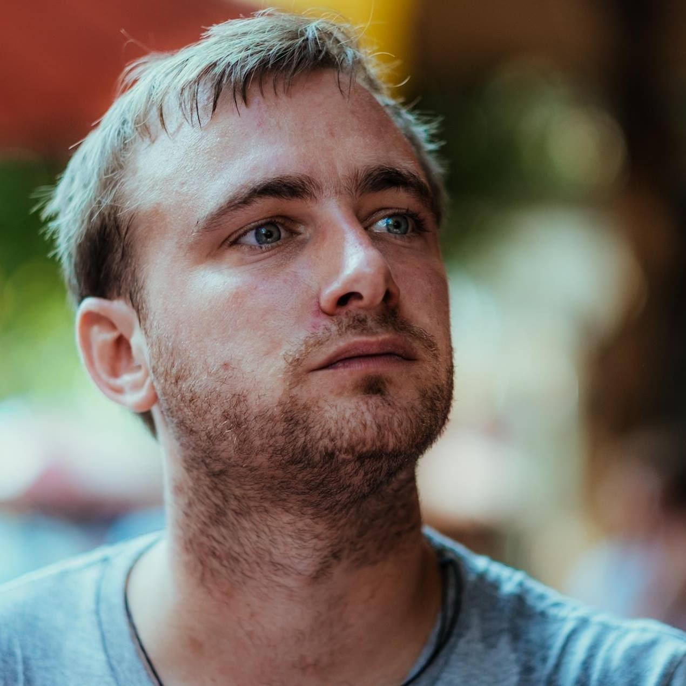

hi! i'm Jan van Thoor.

i'm very good at:
- OOP
- C / C++
- PHP
- Python
- databases
- system / software design
- algorithms
- logical / structured thinking
i love:
- teamwork
- machine learning
- running
- people
- photography
- long-boarding
- traveling
- tech meet-ups
i'm quite good with:
- UNIX command line
- data engineering
- server administration
- process optimization
- cloud infrastructures
- continuous deployment
i speak fluent:
i have worked at:
-
trivago as a Software Engineer (Amsterdam office) from 2016 to present:
- Technologies: Python, EC2, Lambda, SQS, Kinesis, DynamoDB, ElasticSearch, Cloudformation
- Software: Jetbrains IDEs, Linux, OSX, AWS Command Line, GoCD
- Designing, coding and maintaining large-scale data pipelines.
- Setting up monitoring and alarming systems.
- Semantic analysis.
- Creating, automating and maintaining large infrastructures "as code".
- Work with Amazon Web Services at scale.
- Cost optimization of cloud infrastructures.
-
trivago as a Software Engineer from 2012 to 2016:
- Technologies: PHP, MySQL, HTML, CSS, Javascript, Puppet, SALT, Redis, memcached, Kafka
- Software: Mantis, Jira, Jetbrains IDEs, Linux, OSX
- Development and maintenance of trivago's main Hotel Search product.
- Developer in 8-month complete platform re-write.
- Lead Developer on multiple product development and refactoring projects.
- Scaling web traffic that doubled each year to ~200 million page views a day.
- Supporting massive team growth with work on recruiting, processes and culture.
- Converted release process from bi-weekly to multiple releases per day.
- Lead Developer / Team Lead of multiple product development and support teams.
- Release Maintainer responsible for release coordination and chasing down release and scaling issues.
- Mastering complex, high-scale, multi-datacenter infrastructures.
-
Globalpark AG as a PHP developer from 2009 to 2012:
- Technologies: PHP, MySQL, HTML, CSS, Javascript, C#, Java
- Software: Zend Studio, Linux, VIM, Jira, Enterprise Feedback Suite (online market research software)
- PHP / MySQL development in various versions of a large online market research software application.
- Customer support and training for same application (over 6 major release versions).
- Development and support for large amounts of customized code (online diary for consumer information) for one major client on 80 live installations.
- Linux server administration (multiple frontends, multiple master / slave databases, complex cronjob systems, mailing systems).
- Work with massive-scale CSV imports / exports: debugging, customer support, analysis.
- Creating websites with custom CMS system.
- Critical upgrades over up to 6 major software versions, including migration of complex, customized code and large data quantities.
- Large scale data correction / recoding via scripts.
- Code refactoring / standardization.
- Building up test suites with PHP unit tests and Selenium / WebDriver click tests.
-
modus High-Tech electronics from 2006 to 2009:
- Completed Ausbildung zum Fachinformatiker.
- Technologies: C / C++ / C# / Assembler / Labview
- Software: Microsoft Visual Studio (2005, 2008), Labview Visual Instruments
- C/ C++ development of the modusAOI software (automatic optical inspection of PCBs).
- Development, debugging and support for various ActiveX components.
- Algorithm / code optimization using Assembler / SSE2.
- Developing, debugging, improving and testing image analysis and image filter algorithms.
- Construction and on-site installation / maintenance of modusAOI systems.
- Translation of modusAOI software manual (German to English).
-
Photography:
- freelancer (event, portrait, studio, sport photography) from 2011 to present
- virtual nights (event and party photography) from 2011 to 2013
- tonight.de (event and party photography) from 2013 to 2015
- Sportograf (sport photography) from 2014 to 2016
i do some speaking and writing:
-
Open Heart Surgery (In Production):
- Abstract: Refactoring trivago's "heart beat" - the main endpoint of the hotel search: 8 months of work, 60+ refactoring cycles, decoupling 5000 lines of "business logic", from un-testable to 100% test coverage.
- Slides: Speakerdeck
- trivago Tech Days 2015
- PHPUNCONF 2015 in Hamburg
- PHP User Group 2016 in Dusseldorf
- SymfonyLive 2016 in Cologne (German video: Youtube)
- Amsterdam PHP October Meetup 2016 in Amsterdam
-
A Stupidly Simple Introduction to Stupidly Complicated Stuff:
- Abstract: An introduction to machine learning.
- trivago Tech Days 2016
-
Creating a Culture of Quality:
-
Beyond the To-Do List:
- Abstract: A talk on advanced Javascript architecture patterns, above and beyond the standard To-Do list tutorials.
- Slides: Speakerdeck
- FOSDEM 2014 in Brussels
- JSUNCONF 2014 in Hamburg
i went to school at:
- Darvell Elementary School in England from 1993 to 1997
- Maple Ridge Elementary in NY, USA from 1997 to 2002
- New Meadow Run High School in PA, USA from 2002 to 2004
- Fayette County Vocational Technical School in PA, USA from 2004 to 2005
- Uniontown High School in PA, USA from 2005 to 2006
- Berufskolleg Uerdingen in Krefeld, Germany from 2006 to 2009